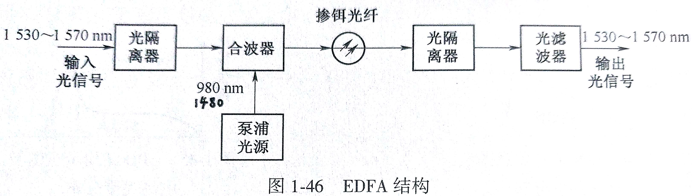

有(电)源光纤器件 (Active Optical Device)
总的来说，有:
- 光源: 电 -> 光
转换，e/o； 发送光 - 光监测器: 光 -> 电
转换, o/e； 接收光 - 光放大器: o/o
(一) 让我们来讲讲基本的物理原理
光是怎样与物质交互的呢？ 其实这个问题本身就是错的，因为光就是物质。
光是物质，量子理论中叫做光子，是目前已知的世界上的基本粒子之一。
所以我们最多问光这种粒子是怎样与其他物质交互的？
作为一名研究通俗知识的知识分子，我肯定是不知道答案的，不过伟大的外国人、伟大的中国人已经提前搞出了一套理论、翻译了一套理论，所以我们直接来看答案吧！
1. 自发辐射
Spontaneous emission is the process in which a quantum mechanical system (such as an atom, molecule or subatomic particle) transitions from an excited energy state to a lower energy state (e.g., its ground state) and emits a quantised amount of energy in the form of a photon.
总体来讲，这个词是用来描述一个发光的过程。重点在于自发。独立地、随机地、自发地、没有人指挥地发光。比如你家里的日光灯，它的光应该是四散开来，没有固定的方向。
用专业的话来讲就是： 射出的光子频率、相位和方向是随机的，是非相干光，频率范围很宽。
frequency, Phase 相同，就是
相干
2. 受激辐射
Stimulated emission is the process by which an incoming photon of a specific frequency can interact with an excited atomic electron, causing it to drop to a lower energy level.
通俗一点讲，就是受到激发、刺激，所以辐射。
具体来讲就是，吸收一个电子，释放一个光子。
用专业的说法就是: 在外来光子的激励下，电子从高能级跃迁到低能级，然后电子与空穴复合，同时释放出一个与外来光子同频、同相的光子。
新产生的
光子与原来光子的频率、相位、振动方向、传播方向均相同，被称为全同光子
3. 受激吸收
受激辐射的反过程。把光子转为电子。
在外来光子激励下，电子吸收外来光子能量，从低能级跃迁到高能级，变成自由电子，这种过程被称为受激吸收。
4. 讲了这么多空道理，现在可以来一个公式了
这个公式描述了 光 与 物质 的交互
物质 = 材料
假设材料有一种属性叫做禁带宽度，
(二) 光源
对光的要求
- 波长中心在，有
足够(不多不少)的发送功率。(功率过大的坏处: 1. 损坏接收器件 2. 加重光纤中的非线性效应)； 光谱的谱线宽度(频谱波中心线下降一半的宽)要窄。(一般来讲，材料越纯，这个越窄) 电/光转换效率高，发送光束方向一致- 响应速度要快，以满足大传输容量的要求
- 温度稳定性好，可靠性高，寿命长
- 器件体积小，重量轻，安装方便，价格低
1. 发光二极管(LED)(Light-emitting diode)(自发辐射，发光)
分为面发光、边发光(记这个有什么用，直接买来用啊，不好的东西市场自然会淘汰它的)
LED 的P-I(power-current)曲线，基本上呈线性正相关
特点：
- 寿命长，稳定可靠
- 调制方便，价格低
- 谱线宽，功率小
- 调制速率低，适合于低速(< 1G)、短距离传输(< 2km)
2. 激光器(LD)(Laser)(先自发辐射，后受激辐射，发光)
原理: 当半导体LD的PN结加上足够大的正向偏压时，粒子数呈现反转分布状态，自发辐射出光子。那些与反射镜垂直的光子受激辐射，光经过谐振加强，最终输出稳定的激光。
LD 的P-I(power-current)曲线，电流<阈值()，自发辐射(光谱宽约几十nm)； 电流>阈值()，才是受激辐射(光谱宽约几nm)
温度升高，阈值上升，输出光功率降低。
th = Threshold = 阈值
特点:
- 相干性好(因为是受激辐射)
- 光功率大，光谱窄(激光啊！是可以切肉的！那光线还不得汇聚于一点吗？)
- 发散小，
电/光转化效率高 - 寿命短
- 受温度影响大(需要室温，比如)
(三) 光(电)检测器： 主要原理是受激吸收
要求
在工作波长上有足够高的响应度(光->电转换效率)
快的响应速度
低的电噪声
良好的线性关系 (方便预测输出，即量化输出值)
体积小，寿命长
PIN 光电二极管
类似PN结，但由 P、I、N 三个区构成，快的响应速度，但效率不够高
APD 雪崩光电二极管: avalanche photodiode
原理: 当高的反向偏压加于APD两端时，其内部形成一个高电场区。用光照射它时，受激吸收，产生载流子(电子 or 空穴)。载流子在高电区被加速，发生持续、猛烈地碰撞，并不断产生新的电子-空穴对。这样的过程使得光生电流迅速增大。这就是雪崩倍增效应。
效率高。
(四) 光放大器
类型
- 利用 稀土参杂， 如 EDFA
- 利用 半导体， 如 SOA
- 利用 光纤非线性效应， 如 RFA
掺铒光纤放大器 (EDFA) (Erbium-Doped Fiber Amplifier) (有用到受激辐射原理)

这个图要记下来
泵浦光源: 现在主要让它发 1480nm 的光； 发射让“铒离子” 受激吸收的光
合波器: 这里指 让两路波在一条路上
传输
先 1480nm，后1550nm； 先让
泵浦光源启动，后输入光信号
- 滤波器: drop 掉 1480nm 的光
整个放大器系统，input 1550nm， output 1550nm
优点:
- 工作波长为 1530~1570 nm，与光纤的最小衰耗波长一致
- 增益高，约为 30~40 dB
- 输出功率高
- 插入损耗低
缺点:
- 只能放大 1550nm 的波长
- 增益不平坦、不均衡 (对小信号的放大能力弱)
拉曼光放大器 (RFA)
特点:
- 谱宽 (可放大多个波长的光)
- 结构简单、成本低
- 增益不高 (< 15 dB)
Question and Answer
简述 APD 的雪崩效应:
当高的反向偏压加于APD两端时，其内部形成一个高电场区。用光照射它时，受激吸收，产生载流子(电子 or 空穴)。载流子在高电区被加速，发生持续、猛烈地碰撞，并不断产生新的电子-空穴对。这样的过程使得光生电流迅速增大。这就是雪崩倍增效应。